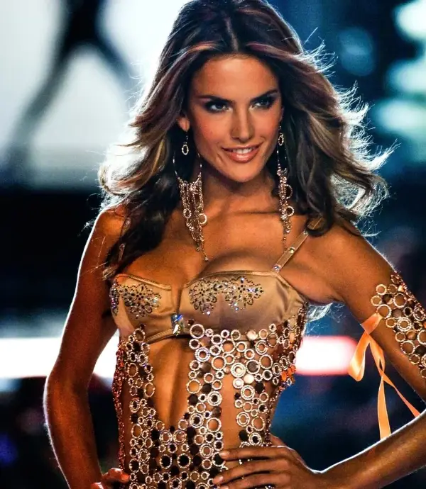
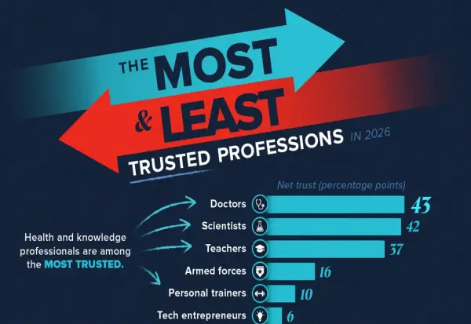

Магазин
Том Брејди во средиштето на раздорот меѓу Кендис Свонпул и Џоан Смолс
Во октомври 2026 година, „Ју-ес викли“ објави дека Брејди е во врска со Свонпул.

(Фото/Видео) Како секси Бразилката доминираше на модната ревија на VS? Планот за вежбање и исхрана на Алесандра Амбросио
Алесандра Амбросио беше ѕвездата на модната ревија на „Victoria’s Secret“, но зад нејзиниот гламур на пистата се крие сериозна напорна работа и труд.
НАУКАТА ЈА МЕНУВА НЕГАТА: Швајцарските иновации Fillerina® и Crescina® во фокусот на ПРОФЕМИНА 2026!
Може ли современата наука да понуди повеќе од класичната нега на кожата и косата?
Вонредни контроли и во месарниците, одземени околу 2 тони месо и производи од месо
Вонредни контроли и во месарниците, одземени околу 2 тони месо и производи од месо Александра Спасеска 29.
Дали Трамп ќе биде уште поголем проблем за Европа ако победат демократите во САД?
Пред изборите на средината од мандатот, Трамп повторно ја вознемири Европа критикувајќи ја Украина и покажувајќи наклонетост кон Русија.
Може ли да се настинете од влажна коса? Научниците велат дека старите луѓе биле делумно во право
Влажната коса не може да предизвика настинка, бидејќи настинките се предизвикани од вируси; сепак, истражувањата покажуваат дека ниските температури можат да ги ослабат одбранбе...
(Фото/Видео) Ким Кардашијан уште еднаш ги маѓепса сите во провокативна креација
Бујните облини на славната Ким Кардашијан уште еднаш ги маѓепсаа присутните на еден настан.

Лекарите на врвот, политичарите на дното: На кои професии најмногу им веруваат луѓето годинава?
Луѓето секојдневно се потпираат на лекарите, наставниците, политичарите и другите професионалци.
Заборавете на големите логоа и скапите брендови: Новиот моден тренд покажува како да изгледате луксузно без да потрошите богатство!
Прочитај повеќе » Текстот Заборавете на големите логоа и скапите брендови: Новиот моден тренд покажува како да изгледате луксузно без да потрошите богатство!
Македонските јавни личности го обожавале ноќниот живот: Испливаа фотографии од младоста, но дали ќе ги препознаете?
На една од фотографиите, таа позира со нејзината пријателка.